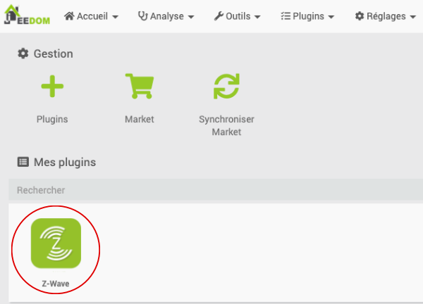
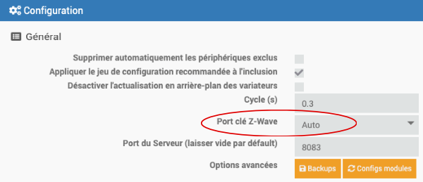
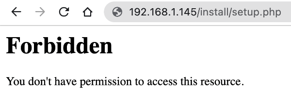

17. Dépannage Jeedom (troubleshooting)¶
17.1 Erreur « Controller is busy »¶
Problème :¶
Lorsque vous tentez d'ajouter un appareil connecté Z-Wave à Jeedom, vous obtenez le message « Controller is busy » et aucun appareil n'est détecté.

Contexte :¶
- Jeedom 4.0.61
- Raspberry Pi 4
- Clé USB Z-Wave Aeotec Z-Stick Gen5
Cause possible :¶
La clé USB Z-Wave n'est pas reconnue par le Raspberry Pi.
Pour voir si c'est le cas, lancez cette commande sur le Pi (notez que le premier caractère est un L minuscule) :
Terminal
Si la clé est reconnue, vous obtiendrez une ligne qui la décrit.
Résultat à l'écran
Bus 002 Device 001: ID 1d6b:0003 Linux Foundation 3.0 root hub
Bus 001 Device 007: ID 0658:0200 Sigma Designs, Inc. Aeotec Z-Stick Gen5n(ZW090) - UZB
BUS 001 DEVICE 006: id 1A40:0101 Terminus Technology Inc. Hub
Bus 001 Device 003: ID 413c:2003 Dell Computers Corp. Keyboard
Bus 001 Device 002: ID 2109:3431 VIA Labs, Inc. Hub
Bus 001 Device 001: ID 1d6b:0002 Linux Foundation 2.0 root hub
Si la clé n'apparaît pas, c'est peut-être parce que le Pi 4 essaie de lui parler en USB3 et ce, même si elle est branchée dans un port USB2, alors que la clé ne parle qu'en USB2.
Solution proposée :¶
L'ajout d'un hub USB, dans lequel on branchera la clé Z-Wave, pourrait régler le problème.
Celui que j'utilise : https://www.amazon.ca/-/fr/Sabrent-Hub-USB-2-0-4-Port/dp/B00BWF5U0M.
Autre cause possible :¶
Jeedom n'utilise pas le bon port pour la clé USB Z-Wave.
Solution proposée :¶
Rendez-vous dans le menu Plugins / Gestion des plugins puis cliquez sur Z-Wave dans la zone Mes plugins.

Dans la zone Configuration, mettez le port clé Z-Wave à Auto.

Si vous obtenez une mention NOOK dans la zone Démon, cliquez sur l'icône de flèche pour redémarrer le démon. Tant que vous n'obtenez pas OK pour le statut et pour la configuration, vous ne pourrez pas ajouter d'appareils connectés Z-Wave à Jeedom.
17.2 Impossible d'ajouter un objet connecté Z-Wave¶
Problème :¶
Lorsque vous tentez d'ajouter un appareil connecté Z-Wave à Jeedom, l'appareil n'est jamais détecté même si vous effectuez les manipulations demandées, par exemple cliquer rapidement 3 fois sur le bouton d'inclusion.
Contexte :¶
- Jeedom 4.0.61
- Raspberry Pi 4
- Clé USB Z-Wave Aeotec Z-Stick Gen5
Cause possible :¶
L'appareil considère encore qu'il est connecté à une boîte domotique.
Ceci se produit si l'appareil n'a pas été correctement déconnecté de la boîte domotique lors d'une précédente installation.
Tant que l'appareil est configuré pour une boîte domotique, il n'est pas possible de l'inclure dans une autre boîte domotique.
Solution proposée :¶
Effectuez une réinitialisation de l'appareil (factory reset). Sur certains appareils, ceci consiste à appuyer sur le bouton d'inclusion de façon prolongée pendant 10 secondes.
Consultez le manuel de l'appareil pour connaître la procédure spécifique à votre appareil.
Autre cause possible :¶
L'appareil est muni d'un système d'auto-inclusion.
Solution proposée :¶
Débranchez l'appareil, mettez la boîte domotique en mode inclusion puis rebranchez l'appareil.
S'il est effectivement muni d'un système d'auto-inclusion et qu'il n'est pas déjà connecté à une autre boîte domotique, il devrait être automatiquement détecté.
Autre cause possible :¶
L'appareil est trop loin de la clé USB Z-Wave.
On sait qu'une fois que les appareils Z-Wave sont inclus dans le système, un appareil peut servir de relais Z-Wave vers un autre appareil, ce qui augmente la portée du Z-Wave.
Cependant, pendant l'inclusion, un appareil ne peut pas compter sur un autre pour lui relayer le signal. L'appareil à inclure doit donc être près de la clé USB Z-Wave.
Solution proposée :¶
Déplacez l'appareil pour qu'il soit près de la clé USB Z-Wave.
Une fois l'inclusion complétée, l'appareil pourra être déplacé vers sa destination finale.
17.3 Erreur pendant l'installation de Jeedom avec wget¶
Problème :¶
Lorsque vous tentez d'installer Jeedom sur une image toute fraîche de Raspberry Pi OS Lite à l'aide de la commande wget -O- https://raw.githubusercontent.com/jeedom/core/master/install/install.sh | sudo bash, vous obtenez le message « ERROR: The certificate of ‘raw.githubusercontent.com’ is not trusted. ».
Résultat à l'écran
pi@raspberrypi:~ $ wget -O- https://raw.githubusercontent.com/jeedom/core/master/install/install.sh | sudo bash
--2021-08-19 16:23:22-- https://raw.githubusercontent.com/jeedom/core/master/install/install.sh
Resolving raw.githubusercontent.com (raw.githubusercontent.com)... 185.199.109.133, 185.199.108.133, 185.199.110.133, ...
Connecting to raw.githubusercontent.com (raw.githubusercontent.com)|185.199.109.133|:443... connected.
ERROR: The certificate of ‘raw.githubusercontent.com’ is not trusted.
ERROR: The certificate of ‘raw.githubusercontent.com’ doesn't have a known issuer.
Pendant l'installation, plusieurs messages d'erreur peuvent apparaître, par exemple :
- E: Release file for http://archive.raspberrypi.org/debian/dists/buster/InRelease is not valid yet (invalid for another 188d 0h 2min 42s)
- E: Failed to fetch http://raspbian.raspberrypi.org/raspbian/pool/main/m/mariadb-10.3/mariadb-server_10.3.27-0+deb10u1_all.deb 404 Not Found [IP: 93.93.128.193 80]
- E: Unable to fetch some archives, maybe run apt-get update or try with --fix-missing?
- Ne peut installer mariadb-client mariadb-common mariadb-server - Annulation
Contexte :¶
- Raspberry Pi OS 10 (buster) sans interface graphique
Cause possible :¶
La date du système n'est pas à jour, ce qui invalide le certificat SSL qui permet d'accéder à un service externe.
Solution proposée :¶
Ajustez la date de Raspberry Pi OS : https://apical.xyz/fiches/la_ligne_de_commande_linux/Ajuster_la_date_et_l_heure_sous_Linux_Ubuntu
17.4 Erreur « Forbidden »¶
Problème :¶
Lorsque vous tentez d'accéder à Jeedom en entrant l'adresse IP du Raspberry Pi dans un navigateur, vous obtenez l'erreur « Forbidden You don't have permission to access this resource. »

Contexte :¶
- Raspberry Pi OS
- Jeedom
Cause possible :¶
Un problème est survenu pendant l'installation de Jeedom.
Solution proposée :¶
Je n'ai pas réussi à trouver la cause exacte du problème. Puisque ce problème m'est arrivé sur une installtion toute fraîche, le plus simple était de recommencer l'installation du système d'exploitation puis de Jeedom.
17.5 Erreur « Release file for http://archive.raspberrypi.org/debian/dists/buster/InRelease is not valid yet »¶
Problème :¶
Lorsque vous tentez de mettre votre système Linux à jour avec la commande sudo apt update, vous obtenez le message d'erreur « Release file for http://archive.raspberrypi.org/debian/dists/buster/InRelease is not valid yet ».
Résultat à l'écran
pi@raspberrypi:~ $ sudo apt update
Get:1 http://archive.raspberrypi.org/debian buster InRelease [32.6 kB]
Get:2 http://raspbian.raspberrypi.org/raspbian buster InRelease [15.0 kB]
Reading package lists... Done
E: Release file for http://archive.raspberrypi.org/debian/dists/buster/InRelease is not valid yet (invalid for another 187d 23h 42min 32s). Updates for this repository will not be applied.
E: Release file for http://raspbian.raspberrypi.org/raspbian/dists/buster/InRelease is not valid yet (invalid for another 187d 18h 43min 12s). Updates for this repository will not be applied.
Contexte :¶
- Raspberry Pi OS 10 (buster) sans interface graphique
Cause possible :¶
La date du système n'est pas à jour, ce qui invalide le certificat SSL qui permet d'accéder à un service externe.
Solution proposée :¶
Ajustez la date de Raspberry Pi OS : https://apical.xyz/fiches/la_ligne_de_commande_linux/Ajuster_la_date_et_l_heure_sous_Linux_Ubuntu
17.6 Erreur « Échec lors du téléchargement du fichier »¶
Problème :¶
Lorsque vous tentez d'installer un plugin Jeedom à partir du Market, vous obtenez le message d'erreur « Échec lors du téléchargement du fichier. Veuillez réessayer plus tard (taille inférieure à 100 octets). Cela peut être dû à une absence de connexion au market (vérifiez dans la configuration de rpi qu'un test de connexion au market marche) ou lié à un manque de place, une version minimale requise non consistante avec votre version de rpi un souci du plugin sur le market, etc. ».

Contexte :¶
- Raspberry Pi OS 10 (buster) sans interface graphique
Cause possible :¶
Vous avez tenté de désactiver les validations SSL du Market puisque vous aviez une erreur de certificat SSL.
Cette erreur était en fait due à une mauvaise date du système.
Solution proposée :¶
Rendez-vous dans le menu Réglages / Système / Configuration.
Dans l'onglet Mises à jour/Market, enlevez le crochet devant Pas de validation SSL (non recommandé).
Ajustez ensuite la date de Raspberry Pi OS pour régler l'erreur de certificat SSL : https://apical.xyz/fiches/la_ligne_de_commande_linux/Ajuster_la_date_et_l_heure_sous_Linux_Ubuntu
17.7 Erreur « Impossible de contacter le serveur Z-Wave »¶
Problème :¶
Lorsque vous tentez d'accéder au menu Plugins / Protocole domotique / Z-Wave, vous obtenez l'erreur « Impossible de contacter le serveur Z-Wave. » ou encore « Le Réseau Z-Wave est en cours de démarrage. ».
Contexte :¶
- Jeedom 4.3.17
Cause possible :¶
Jeedom n'a pas terminé de charger les ressources nécessaires pour faire fonctionner la clé USB Z-Wave.
Solution proposée :¶
Réessayez dans quelques minutes.
Si le problème n'est toujours pas résolu, redémarrez le système.
17.8 J'obtiens l'identifiant d'une commande plutôt que sa valeur¶
Problème :¶
Lorsque vous exécutez un scénario qui doit ajouter la valeur d'un capteur dans un fichier journal à l'aide de log::add(), vous obtenez l'identifiant de la commande plutôt que sa valeur.
Contexte :¶
- Jeedom 4.3.17
Cause possible :¶
Vous avez entré directement la chaîne qui représente la commande, sans exécuter cette chaîne.
Solution proposée :¶
Ajustez votre code pour que la commande soit exécutée.
Plutôt que ceci :
Bloc de code dans scénario (PHP)
Entrez ceci :
Bloc de code dans scénario (PHP)
$cmd = cmd::byString('#[Cuisine][Détecteur Lumière][Luminance]#');
$value = $cmd->execCmd();
log::add('meslogs', 'INFO', "Luminance : $value");
17.9 Erreur « SQLSTATE[HY000] [1045] Access denied for user 'jeedom'@'localhost' (using password: YES) »¶
Problème :¶
Lorsque vous lancez l'interface Web de Jeedom, vous obtenez le message « SQLSTATE[HY000] [1045] Access denied for user 'jeedom'@'localhost' (using password: YES) ».
Contexte :¶
- Jeedom 4.3.17
Cause possible :¶
Vous avez modifié le mot de passe de la base de données Jeedom mais vous n'avez pas changé la configuration dans Jeedom.
Solution proposée :¶
Pour dire à Jeedom quel est le mot de passe de sa base de données :
- Éditez le fichier de configuration common.config.php.
Terminal
* Entrez le nouveau mot de passe à la ligne password.Fichier /var/www/html/core/config/common.config.php
<?php
/\* This file is part of Jeedom.
\*
\* Jeedom is free software: you can redistribute it and/or modify
\* it under the terms of the GNU General Public License as published by
\* the Free Software Foundation, either version 3 of the License, or
\* (at your option) any later version.
\*
\* Jeedom is distributed in the hope that it will be useful,
\* but WITHOUT ANY WARRANTY; without even the implied warranty of
\* MERCHANTABILITY or FITNESS FOR A PARTICULAR PURPOSE. See the
\* GNU General Public License for more details.
\*
\* You should have received a copy of the GNU General Public License
\* along with Jeedom. If not, see <http://www.gnu.org/licenses/>.
\*/
/\* \* \*\*\*\*\*\*\*\*\*\*\*\*\*\*\*\*\*\*\*\*\* Debug \*\*\*\*\*\*\*\*\*\*\*\*\*\*\*\* \*/
define('DEBUG', 0);
/\* \* \*\*\*\*\*\*\*\*\*\*\*\*\*\*\*\*\*\*\*\*\*\*\* MySQL & Memcached \*\*\*\*\*\*\*\*\*\*\*\*\*\*\*\*\*\*\* \*/
global $CONFIG;
$CONFIG = array(
//MySQL parametres
'db' => array(
'host' => 'localhost',
'port' => '3306',
'dbname' => 'jeedom',
'username' => 'jeedom',
'password' => 'mot-de-passe-en-clair',
),
);
17.10 Erreur « Le driver Z-Wave n'est pas initialisé »¶
Problème :¶
Dans l'interface Web de jeedom, lorsque vous vous rendez dans le menu, Plugins / Protocole domotique / Z-Wave JS, vous obtenez le message « Le driver Z-Wave n'est pas initialisé, veuillez patienter. Si le message reste trop longtemps, veuillez vérifier la configuration du démon » ou encore « Le démon Z-Wave n'est pas démarré ».
Contexte :¶
- Jeedom 4.3.20
Cause possible :¶
Vous avez mal configuré le port de la clé USB Z-Wave.
Solution proposée :¶
Pour connaître le port à utiliser, débranchez la clé USB Z-Wave du Raspberry Pi puis rebranchez-la.
Dans une fenêtre Terminal sur le Raspberry Pi ou via SSH, entrez cette commande :
Terminal
Résultat à l'écran
pi@jeedom:~ $ dmesg | grep tty
[ 0.000000] Kernel command line: coherent\_pool=1M 8250.nr\_uarts=0 snd\_bcm2835.enable\_compat\_alsa=0 snd\_bcm2835.enable\_hdmi=1 video=HDMI-A-1:1680x1050M@60 smsc95xx.macaddr=D8:3A:DD:24:30:4D vc\_mem.mem\_base=0x3f000000 vc\_mem.mem\_size=0x3f600000 console=ttyS0,115200 console=tty1 root=PARTUUID=c764c245-02 rootfstype=ext4 elevator=deadline fsck.repair=yes rootwait
[ 0.001837] printk: console [tty1] enabled
[ 1.584526] fe201000.serial: ttyAMA0 at MMIO 0xfe201000 (irq = 36, base\_baud = 0) is a PL011 rev2
[ 5.314135] cdc\_acm 1-1.3:1.0: ttyACM0: USB ACM device
[ 159.584503] cdc\_acm 1-1.3:1.0: ttyACM0: USB ACM device
Le port à utiliser apparaîtra sur la dernière ligne.
Utilisez cette valeur dans l'écran Plugins / Gestion des plugins / Z-Wave JS vis-à-vis la configuration Port du contrôleur Z-Wave.
Patientez quelques minutes après avoir enregistré la configuration pour que tout rentre dans l'ordre.